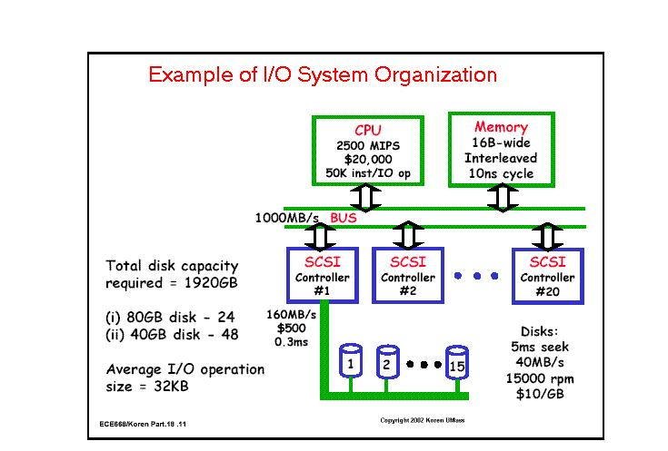

Designing an I/O System
The art of I/O system design is to find a design that meets goals for cost, dependability and variety of
devices while avoiding bottlenecks in I/O performance. Avoiding bottlenecks means that components must be
balanced between main memory and I/O devices, because performance - and
hence effective cost performance - can only
be good at the weakest link in the I/O chain.
The architect must plan for expansion, both in numbers and types of
I/O devices, so that customers can tailor
the I/O to their applications. Finally, storage must be dependable, adding new constraints on proposed designs.
Below is a series of steps to follow in designing an I/O system. The answers to each step may be dictated
by market requirements or simply by cost, performance, and availability goals.
-
List the different types of I/O devices to be connected to the machine, or list the standard buses
that the machine will support
-
List the physical requirements for each I/O device. Requirements
include size,
power, connectors, bus slots,
expansion cabinets, and so
on
-
List the cost of each I/O device, including the portion of cost of any controller needed for this
device.
-
List the reliability of each I/O device.
-
Record the CPU resource demands of each I/O device. This list should include
-
Clock cycles for instructions used to initiate an I/O, to support operation of an I/O device (such as handling
interrupts), and to complete I/O
-
CPU stalls due to waiting for I/O to finish using the memory, bus, or cache
-
CPU clock cycles to recover from an I/O activity, such as cache flush
-
List the memory and I/O bus resource demands of each I/O device. NOTE that even when the CPU is not using
the memory, the bandwidth of main memory and the I/O bus is limited.
-
Assess the performance and availability of the differnt ways to organize these I/O devices. Finally select
the best organization.
The diagram below shows an example of I/O organization of a
computer system.
